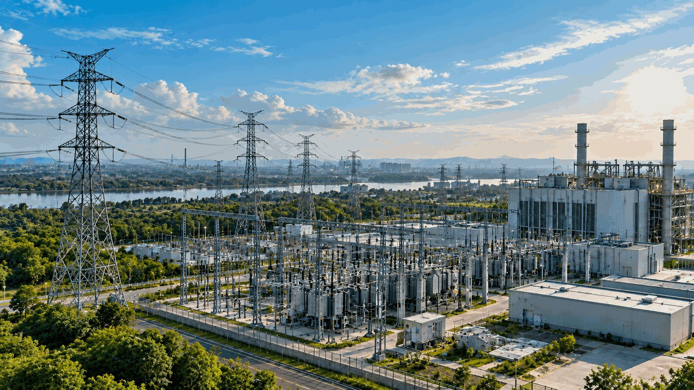

We Measure.
Every engagement begins with on site power quality measurement. Before any solution is proposed, we read what the facility's electrical system is actually doing.
Once your problem is solved, our team stays to support you, always ready to deliver more than we commit. It is how every engagement is run.
Industries We Serve.
Every industry runs differently. Every power system tells a different story.
Industrial
- Automotive
- Textiles
- FMCG
- Petro-chemical applications
- Mining
- Marine duty applications
Commercial & Healthcare
- Commercial infrastructure
- Healthcare facilities
- Hotels
- Schools
- Offices
Data Centres & Critical Infrastructure
- Data centres
- Telecom
- Power grid infrastructure
- Power generation
Energy Transition
- Renewable energy
- Energy storage
- EV charging
- Microgrids
FAQs
Everything you need to know about Yansa.
Power quality is how clean and stable the electricity inside your facility is: a steady voltage, a smooth sine wave and a healthy power factor. Drives, UPS systems, welding lines and other modern loads distort it, and the effects show up as heat, tripping and higher bills.
Poor power quality wastes energy, raises kVAh billing, overheats motors, transformers and cables, and causes breakers to trip without warning. Good power quality protects your equipment and production uptime, and lowers what you pay for every unit of work.
We measure, diagnose, and resolve power quality problems in industrial facilities, end to end, from first study to post installation support.
YanQ is a structured diagnostic process that measures your electrical system against IEEE 519-2022. If you are experiencing unexplained failures, rising bills, or nuisance tripping, you need one.
We start with measurement, not a product. Our team of doctorates and engineers in power electronics and power systems reads what your system is actually doing, sizes the solution to that data, and stays to support it after handover. Diagnosis, solution and support come from one team.
Yes. We are a system integrator of hybrid panels, combining active and passive correction, such as an active harmonic filter with a detuned capacitor stage, in one panel engineered for your site.